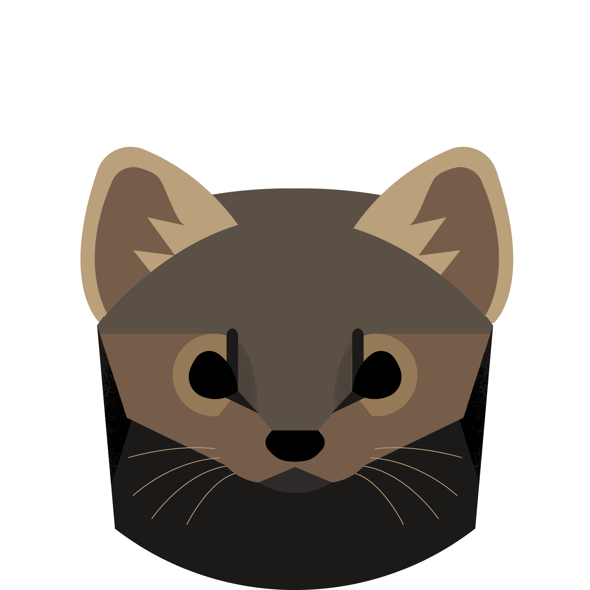
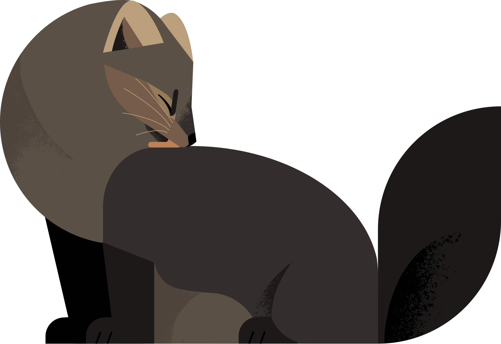

Wild Sables are very monotone in color, usually coming in a few shades of brown. Some appear with the signature dark legs and tail, but they lack the bib other marten species have. Covered in thick fur, the Sable is also known for coming in darker shades, appearing almost black, though that color doesn't exist in the wild. Its overall shape and body structure resembles that of its North American cousins, likely due to the similar climates.
Sables have rounder faces and wider cheeks, with larger, pointier ears. Its darker appearance makes it harder to distinguish the head from the body, espeically due to its darker muzzle, though its long whiskers help mark out its snout. The colder climate also ensures longer fur on the head, though it is significantly shorter than the fur on its body.
The Sable is found mostly in Northern and Central Asia. Due to the snowy climates of these regions, the Sable is well adjusted to surviving in the snow and the cold, often found trudging in the snow and climbing trees and cliffs. Due to the inhospitable climate of their territory, wild Sables are seldom spotted by people. However, due to domestication, that doesn't exactly make them rare in population.
Sables are unusually friendly towards humans despite their reclusive and hostile environment, known for being easily domesticated even when brought up in the wild. However, human intervention is displayed at its highest through selective breeding. While wild Sables are born with dark brown fur, domesticated Sables can be bred to have black fur, a trait that wouldn't be found in wild martens. However, the wild colors don't stop there. Demand and human curiosity has led to more patterns and colors, such as tuxedo. Interestingly, the Sable is treated like a cat or a dog, in a sense that their genetics are easily manipulated by humans and brought up as pets.
As Sables are treated as domesticated animals, that unfortunately means that some are farmed like cattle. Their fur, which is known for being luxuriously thick and coming in tempting colors, are popular when it comes to making fur coats or other clothing. Sable fur is treated as a symbol of high status since one authentic article of clothing containing it can cost up to a couple thousand dollars. Some people look down on this practice due to the cruel nature of Sable farms, and some Sables are rescued from such conditions and live out the rest of their lives as companions rather than clothes.
